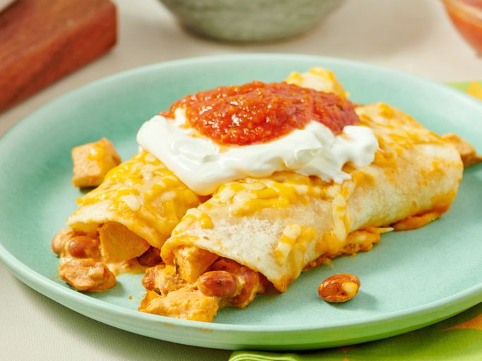

Home
Chicken Enchiladas

Description
These easy chicken enchiladas are great for a quick and tasty dinner. There aren't many ingredients in this
recipe and it doesn't take much time. Garnish with your favorite toppings such as lettuce and tomatoes, or
sour cream.
Ingredients
- 1 (8 ounce) package cream cheese
- 1 cup salsa
- 2 cups chopped cooked chicken breasts
- 1 (15.5 ounce) can pinto beans, drained
- 6 (6-inch) flour tortillas
- 2 cups shredded Colby-Jack cheese
Steps
- Gather all ingredients. Preheat the oven to 350 degrees F (175 degrees C).Lightly grease a 9x13-inch
baking dish.
- Combine cream cheese and salsa in a small saucepan over medium heat; cook and stir until well blended.
Stir in chicken and pinto beans.
- Fill tortillas with chicken mixture, roll up and place into the prepared baking dish. Sprinkle shredded
cheese on top. Cover pan with aluminum foil.
- Bake in the preheated oven for until heated through, about 30 minutes.